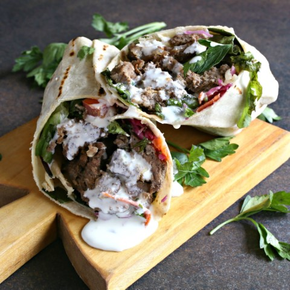

Home
About Me
Recipes
Doner kebab

Description
Doner kebab is a type of kebab, made of meat cooked on a vertical rotisserie. Seasoned meat stacked in the shape of an inverted cone is turned
slowly on the rotisserie, next to a vertical cooking element. The operator uses a knife to slice thin shavings from the outer layer of the meat as it cooks.
Ingredients
For the Kebab:
- 1 pound ground lamb (or 1/2 pound each of ground lamb and ground beef)
- 1 large egg
- 4 clove garlic, peeled and finely minced
- 1 teaspoon ground cumin
- 1 teaspoon ground coriander
- 1 teaspoon smoked paprika
- 1 teaspoon dried oregano
- 1/2 teaspoon kosher salt
- 1/4 teaspoon ground black pepper
- 1 tablespoon oil, more for the pan
For the Sandwich:
- 4 large pita, naan, or flatbread
- 1 cup assorted lettuce leaves
- 1 large tomato, sliced
- 1/2 medium English cucumber, sliced
- 1/4 large red onion, peeled and sliced
- Tzatziki sauce or tahini sauce
Steps
- Gather the ingredients.
- Preheat the oven to 350 F.
- In a large bowl, combine the ground lamb, egg, garlic, ground cumin, ground coriander, smoked paprika, dried oregano, salt, and black pepper.
- Place the mixture into an oiled 9 x 5-inch loaf pan and cook in the oven for approximately 30 minutes or until the top is a light golden brown.
- You can slice the loaf immediately if you like but, for best results, cool completely, wrap in aluminum foil, and refrigerate until firm.
- To reheat, add a little olive oil to a large skillet, slice the loaf very thinly and crisp up the slices in the hot pan for a few minutes.
- Assemble the sandwiches with pita, warmed and toasted through. Spread on some tzatziki or tahini sauce, add lettuce, tomato, cucumber, onion, and top with more sauce.
- Serve and enjoy.